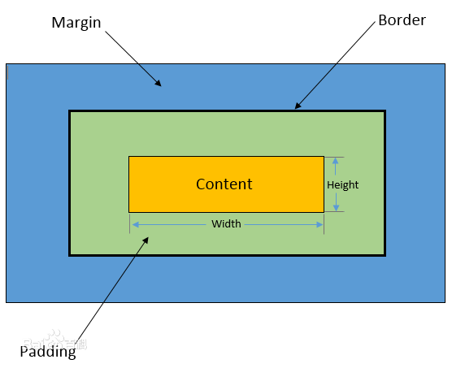

样式优先级
样式分为内联css，嵌入css，和外联css，内联css是指直接写在html里的style里的样式，嵌入css是指写在同一页面的<style>标签里的样式，外联css是用<link>引入的外部css文件,这三者的优先级是内联>嵌入>外联，
在同级的嵌入或者外联css中，不同的选择器权重不同，优先级不同，html选择器权重为1，类选择器权重为10，id选择器权重为100，权重越大优先级越高，当权重相同时会采用“层叠原则” 后定义的会被应用，！important的话是手动把权重加到最高，
算是特权阶级，容易对别的元素造成影响，尽量少用。
display:none
作用是隐藏元素,常用相同功能的有opacity:0; visibility:hidden;
三者之间的区别是用display确保元素不可见且被隐藏的元素不占据任何空间,不响应用户交互，就好像元素完全不存在
opacity:0;只能从视觉上隐藏元素，而元素本身依然占据它自己的位置并对网页的布局起作用，它也将响应用户交互
visibility:hidden;元素不可见但是被隐藏的元素依然会对我们的网页布局起作用。与opacity不同的是它不会响应任何用户交互
三者之间的区别是用display确保元素不可见且被隐藏的元素不占据任何空间,不响应用户交互，就好像元素完全不存在
opacity:0;只能从视觉上隐藏元素，而元素本身依然占据它自己的位置并对网页的布局起作用，它也将响应用户交互
visibility:hidden;元素不可见但是被隐藏的元素依然会对我们的网页布局起作用。与opacity不同的是它不会响应任何用户交互
display:block和display:inline
display:block一般用于将行内元素转换为块级元素,而display:inline刚好相反
display:block的特征是独占一行，宽高可控制，margin、padding横向纵向都有效果，常见块级元素有div、p、h1-h6、ul/ol系列、table系列，
display:inline的特征是不能独占一行，宽高由内容撑开，padding横向纵向都有效，margin横向有效纵向无效，常见行内元素有a、span、i、img、input、select、textarea、button，
不过块级元素中的table系列和ul系列有点特殊，虽然也属于块级具有块级元素的特征，但是有更细的属于自己的display
table为display:table,tr为display:table-row,td为dispay:table-cell,li为display:list-item
display:block的特征是独占一行，宽高可控制，margin、padding横向纵向都有效果，常见块级元素有div、p、h1-h6、ul/ol系列、table系列，
display:inline的特征是不能独占一行，宽高由内容撑开，padding横向纵向都有效，margin横向有效纵向无效，常见行内元素有a、span、i、img、input、select、textarea、button，
不过块级元素中的table系列和ul系列有点特殊，虽然也属于块级具有块级元素的特征，但是有更细的属于自己的display
table为display:table,tr为display:table-row,td为dispay:table-cell,li为display:list-item
display:inline-block
行内块元素同时具有行内元素和块级元素的部分特征，不独占一行，宽高可以控制
行内元素变为inline-block
span
span
块级元素变为inline-block
ppppp1
ppppp2
ppppp1
ppppp2
两个inline-block的p标签中间产生空格的原因和行内元素那个一样
position:fixed
固定定位，相对于浏览器窗口来对元素进行定位。常用于页面顶部导航栏，侧边导航栏功能按钮或者底部返回顶部按钮等。
position:relative
相对定位，相对于一个元素原本应该在的位置进行定位。进行定位后文档流中元素原本在的位置还是会保留，所以不会对周围的其他元素造成影响
position:absolute
绝对定位，相对于最近的已定位父元素，如果元素没有已定位的父元素，那么它的位置相对于html元素定位，进行定位后元素跳出原文档流，原本的位置不保留，会被后面的元素补上

12
34
56
78
z-index
可以设置元素的堆叠顺序，只能在定位元素上奏效,数值越大离用户越近
盒子模型
在css布局时，一个元素分为内容（content）、padding（内边框）、border（边框）、margin（外边距）四部分。
在标准的盒子模型中，width指content部分的宽度，在IE盒子模型中，width表示content+padding+border这三个部分的宽度。
所以在布局的时候，如果父div是1200px,3个左浮动的子元素，宽400px，在标准的盒子模型中只要给其中一个子元素加了border或者padding最后一个子元素会掉下来,在IE盒子模型中不会
如果想要切换盒模型也很简单,CSS3有个box-sizing，标准盒子模型是box-sizing: content-box，IE盒子模型是box-sizing: border-box
在标准的盒子模型中，width指content部分的宽度，在IE盒子模型中，width表示content+padding+border这三个部分的宽度。
所以在布局的时候，如果父div是1200px,3个左浮动的子元素，宽400px，在标准的盒子模型中只要给其中一个子元素加了border或者padding最后一个子元素会掉下来,在IE盒子模型中不会
如果想要切换盒模型也很简单,CSS3有个box-sizing，标准盒子模型是box-sizing: content-box，IE盒子模型是box-sizing: border-box

标准
标准
标准
IE盒模型
IE盒模型
IE盒模型
浮动
浮动的时候，浮动的元素会脱离原文档流，它原来的位置会被其他元素顶替，如果一个div没有设定高度，高度靠内部的元素撑开，当它里面的元素浮动的时候，这个div的高度就可能产生塌陷,然后整个布局就有可能会乱掉 这时候就需要清除浮动,清楚浮动的方法比较常用的有，加一个空容器样式为clear:both，或者用父容器的after伪类来清除，还有一个是用overflow:hidden,让父容器把浮动的子元素重新包裹进去,
居中
水平居中最常用的两个margin：0 auto和text-align:center;
如果子元素宽高度一定的时候,可以考虑用position:absolute，top、left设为50%，然后计算需要留白的margin在定位中减去，来使子元素水平居中或者垂直居中,缺点是没有足够空间时，content 会消失
垂直居中，单行文字的时候可以用给height和line-height设定固定值，然后使两者数值相等，
块级元素的话，可以把元素的显示设为表格，然后用vertical-align居中，缺点是IE部分版本不生效，嵌套好几层标签
在 content 元素外插入一个 div,设置此 div的height:50%; margin-bottom:-contentheight,content 清除浮动，并显示在中间。
如果子元素宽高度一定的时候,可以考虑用position:absolute，top、left设为50%，然后计算需要留白的margin在定位中减去，来使子元素水平居中或者垂直居中,缺点是没有足够空间时，content 会消失
垂直居中，单行文字的时候可以用给height和line-height设定固定值，然后使两者数值相等，
块级元素的话，可以把元素的显示设为表格，然后用vertical-align居中，缺点是IE部分版本不生效，嵌套好几层标签
在 content 元素外插入一个 div,设置此 div的height:50%; margin-bottom:-contentheight,content 清除浮动，并显示在中间。
父容器display:table子容器display:table-cell;vertical-align: middle;